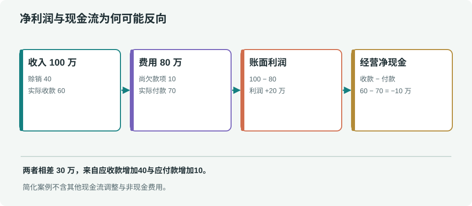
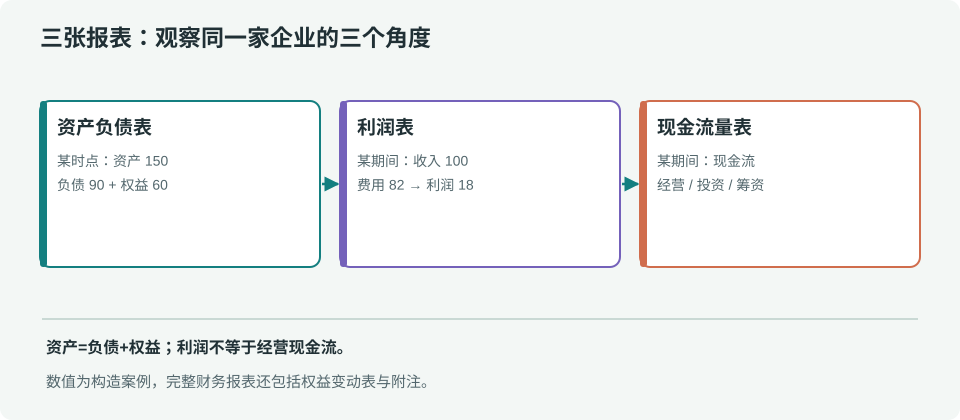

CHAPTER 04 · INVESTMENT RESEARCH
财务报表：利润、资产与现金的三种语言
一家公司可能盈利但缺少现金；只有把时点、期间和确认口径拆开，这个现象才不矛盾。
利润与现金的“矛盾”：先从一个小例子开始
一家企业本期卖出商品 100 万元，但只收到 60 万元，另外 40 万元形成应收款；同期确认费用 80 万元，其中实际支付 70 万元，另 10 万元尚未付款。忽略税收和其他调整时，账面利润是 100 − 80 = 20 万元，经营收支净额却是 60 − 70 = −10 万元。
这不自动说明公司造假。利润按照权责发生制等确认原则反映期间经济成果；现金流则记录收付款。理解差异的关键是：账面确认与真正收付可能跨越不同日期。

财务报告并不只有三张表
一般完整的财务报表还包括所有者权益变动表和附注。上市公司定期报告包含管理层讨论、重大风险、公司治理以及审计相关资料。分析之前，应先核对报告主体、合并范围、币种、报告期、会计准则和是否经审计。
审计意见是重要的质量信号，却不是对企业未来现金流或股价的保证。对于利润表中的大额“其他收益”、资产减值、非经常性项目，应该查附注和会计政策，不应只看摘要中的净利润。
资产负债表是一张“时点快照”
资产表示企业控制的经济资源；负债表示需要履行的现时义务；所有者权益是资产减负债后的剩余权益。会计恒等式描述的是一个时点的存量结构，并不直接告诉你企业这一年赚了多少钱。

判断资产质量时，需要追问应收款是否可收回、存货是否减值、商誉是否存在减值迹象、货币资金是否受限。判断负债压力还要看到期时间和债务契约，而不只是资产负债率。
利润表呈现的是期间成果，而非银行流水
利润表通常从收入、成本、费用和其他收益费用项目逐步形成利润。毛利帮助理解商品或服务的直接经济性；营业利润与净利润还受研发、管理、销售、减值、税费等影响。收入确认与收款时点不同，因此利润可能领先于经营现金流。
| 本期构造数据 | 金额（万元） | 需要理解的事情 |
|---|---|---|
| 收入 | 100 | 可能包含尚未收到的款项 |
| 成本费用合计（教学简化） | 82 | 费用确认不等于现金全部支付 |
| 利润 | 18 | 用于描述会计收益，不等于现金净增加 |
如果营业利润显著改善但经营现金流长期走弱，应观察应收账款、合同资产、存货、收入确认政策和坏账准备。判断异常的关键是多期趋势和业务解释，而不是单一期末数字。
现金流量表把来源分为经营、投资与筹资
经营现金流与核心业务收付款相关，投资现金流与购建或处置长期资产等相关，筹资现金流涉及融资、偿债或分配资金。投资现金流为负可能来自有价值的扩产，也可能来自低效率的资本支出；筹资现金流为正可能缓解短期资金缺口，却增加未来债务压力。
假设期初现金30万元，经营净流出10万元、投资净流出40万元，新增融资流入50万元，不考虑其他调整，则期末现金仍是30万元。这并不能单独证明公司经营健康或不健康。
勾稽关系：从净利润走向经营现金流
折旧摊销、某些减值等非现金项目，以及应收、存货和应付款的变动，是利润与经营现金流之间常见的桥梁。应收增加意味着一部分收入尚未变成现金；存货增加通常占用资金；应付增加可能暂时延迟现金支出。
现金流口径不要偷换：经营现金流不是自由现金流。常见简化自由现金流估计会从经营现金流扣除资本开支，但企业自由现金流与股权自由现金流的定义不同，估值必须说明使用哪一种。
需要调查的不是“利润比现金多就一定有问题”，而是：差异由哪些科目产生，是否和商业模式、付款季节性、客户信用与扩张阶段一致？差异能否在之后合理反转？
2026年财务列报修订：新规则不是同一天适用所有公司
2026年财政部修订《企业会计准则第30号——财务报表列报》，引入更结构化的列报等要求，但设置了分阶段执行安排。把“2026年发布”误当作“2026年所有企业均执行”，会直接损害跨年度比较。
| 企业类型 | 执行起点（财政部通知） | 研究提示 |
|---|---|---|
| 境内外同时上市，以及指定的境外上市企业 | 2027年1月1日 | 注意新旧利润表分类与可比期间调节 |
| 其他境内上市企业 | 2029年1月1日 | 2026年报告一般仍应按当期适用准则阅读 |
| 执行企业会计准则的非上市企业 | 2030年1月1日 | 不能提前假设所有企业采用新列报 |
对真实公司，应查看其附注披露的会计政策和具体首次执行情况。制度转换可能导致列报分类变化，但不应被误当作经营本身突然改善。
复核问题
- 为什么确认净利润20万元不能推断银行余额增加20万元？
- 流动资产大于流动负债，为何仍可能遇到支付困难？
- 研究一家只在境内上市的公司2026年年报时，为什么必须记录适用准则版本？
资料来源与适用范围
以下是概念、监管和列报制度的一手参考。数值及图中的公司均为构造案例；真实公司的分析应查原始定期报告与附注。